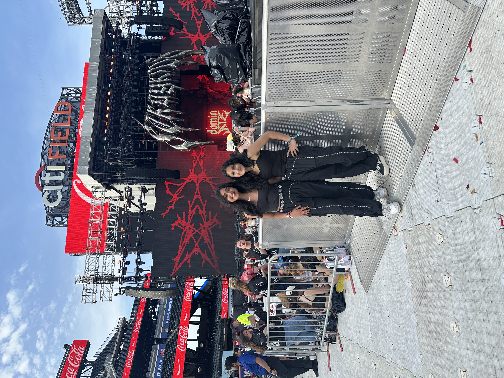
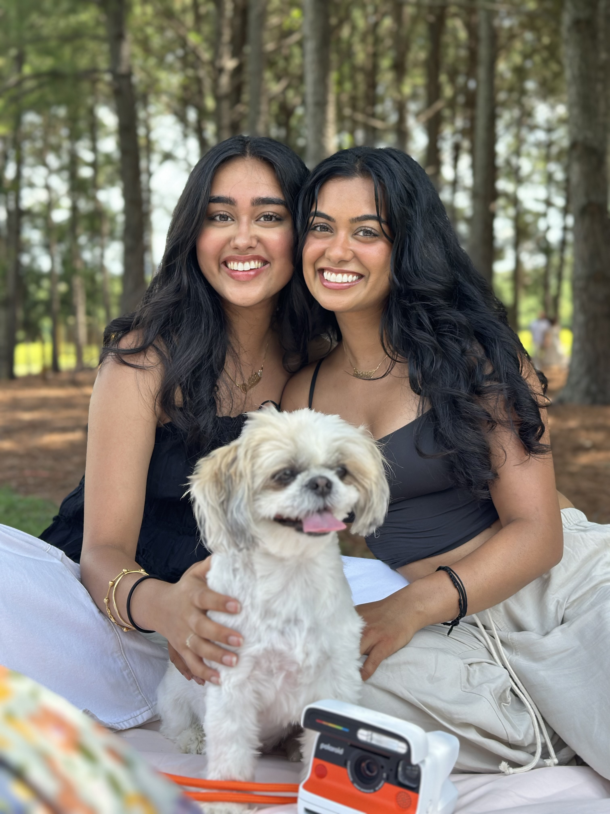

Professional Overview
I am a student at the University of North Carolina at Chapel Hill with a strong interest in the intersection of media and storytelling. Currently I'm pursuing a double major in Business Administration and Media & Journalism with post graduation plans of entering the marketing field. I am especially interested in understanding how audiences engage with content and how brands connect with people through culture and communication.
Through my work and past internship experiences, I've learned how to focus on translating ideas into clear, engaging narratives. I aim to combine strategy with creativity through digital storytelling or creative projects. It is extremely important that my work is both meaningful and impactful to the audience I produce it to.
What's Inside
About
Who is Prathiti Jain?

Get to know me professionally
I am a student at the University of North Carolina at Chapel Hill with a strong interest in the intersection of media and business. As a double major in Business Administration and Media & Journalism, I am especially interested in the ways communication and strategy work together to shape how people connect with content, brands, and ideas.
Across both academic and professional experiences, I have focused on learning how to translate ideas into clear, compelling narratives. My past internship at Taurus Wellness (mental health start-up) helped me strengthen my skills in communication and digital storytelling. From finding research articles that resonated with the brand to adapting that content into stories Taurus' audience could understand, I learned how an audience moves, pays attention, and most importantly, what they engage with. This experience showed me the value of producing work that feels thoughtful, intentional, and audience-centered.
Looking ahead, I hope to build a career in corporate marketing where I can combine creativity with strategy to produce meaningful work. I am drawn to opportunities that allow me to grow my skillset while thinking both critically and creatively. Most importantly, I look forward to finding a place where I can help brands communicate in ways that feel authentic and memorable.
What I'm Doing Now
- Double majoring in Business Administration and Media & Journalism at UNC Chapel Hill
- Active in Pi Sigma Epsilon, Women in Consulting at Carolina, Carolina Women in Business
Past Experience
- Marketing Specialist @ Taurus Wellness
- Strategy & Development Intern @ B-Side Arts
Where I'm Headed
- Corporate Marketing in Big Tech
- Entertainment Marketing
Get to know me personally
What I'm Listening To Right Now
Favorite Quote
Free Time
I enjoy spending time with my Shih Tzu (Piku), creating content ( ), discovering new music, and trying new restaurants as a vegetarian.
Favorite Photos


Work
Lexi Wilder Finds Herself
For many people, coming out is a long and emotional process of self-discovery, fear, and eventual acceptance. For Lexi Wilder, a student at the University of North Carolina at Chapel Hill, that journey began much earlier than she expected. From the first feelings she didn't quite understand in elementary school to the internal conflict she experienced in middle school, Lexi's story reflects the complexity of growing up while questioning your identity.
As Lexi grew up in a religious environment and became heavily involved in church extracurriculars, she struggled to reconcile her feelings with what she had been taught. She recalls nights filled with confusion and frustration, wondering why she couldn't feel the same way as everyone else. This internal battle shaped much of her early experience, making it difficult for her to fully accept who she was. These moments highlight the emotional weight that many LGBTQ+ individuals carry before they ever share their identity with others.
When it came time to come out, Lexi's experiences with her parents were very different. Her father responded with immediate support, offering reassurance and acceptance. Her mother, however, initially reacted with confusion and pain, even expressing that she felt she had failed as a parent. This response had deeply impacted Lexi at the time, but it also marked the beginning of a gradual shift. Over time, her mother began to show small but meaningful signs of support, demonstrating that acceptance can evolve.
Today, Lexi describes herself as happier and more comfortable than ever before. At Chapel Hill, she has found an environment where she can openly express who she is without fear. Her story is not just about coming out. It is about growth, resilience, and understanding that acceptance has to come from others and oneself. The most important piece she learned was that acceptance from both takes time. It serves as a reminder that while the journey may be difficult, it can lead to a place of confidence and authenticity.
Video
The video below brings Lexi's story to life through her own words, capturing the emotion and personal experiences behind her journey. Hearing directly from Lexi adds depth and authenticity that written text alone cannot fully convey.
Infographic
This infographic highlights what meaningful support looks like for LGBTQ+ individuals, specifically during the coming out process. Drawing from research by The Trevor Project , it emphasizes how responses from family and community members can directly impact mental health outcomes.

Bias Wrecked
Bias Wrecked is a K-pop podcast and content platform where I break down the stories, strategies, and cultural moments behind some of the biggest groups in the industry. I started this project out of a genuine curiosity for how K-pop groups are built and marketed differently from Western artists, and it quickly grew into a space where I could combine storytelling with audience-focused content. Through episodes, short-form videos, and digital content, I focus on making complex industry insights accessible and engaging. This project reflects my ability to connect cultural trends with strategic thinking while building a brand that resonates with a global audience.